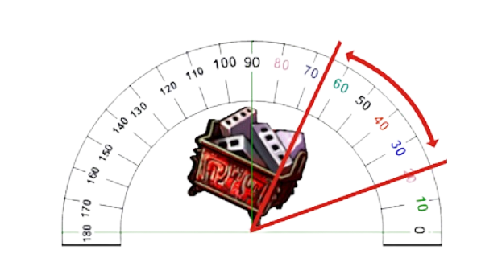

As armas são as ferramentas mais importantes do jogo, sendo obrigatórias para o combate. Elas podem ser fortalecidas e melhoradas de diversas maneiras, possuindo um papel fundamental para definir quem sairá vitorioso da arena.
Cada arma possui um dano base fixo, o qual não muda mesmo subindo de level e um dano adicional que, esse sim, aumenta conforme o nível da arma.
Além disso, as armas também possem atributos base que aumentam conforme o seu formato muda. São eles:
As armas assim como as roupas e os chapéus podem ser fortalecidas utilizando Super-Pedras.
Dependendo da versão do jogo o sistema de fortalecimento pode mudar, mas no geral as armas vão do level 0 ao level 12 e após atingirem o nível máximo podem ser douradas e avançadas para aumentarem ainda mais o seu poder.
Além disso, as armas podem receber também composições para aumentar o seu atributo e nas versões mais recentes do jogo é possível sublinhá-las.
Cada arma possui um limitador de ângulo, isto é, quando o seu personagem está perpendicular (90º) ao chão os ângulos limites da arma definirão o intervalo angular em que seu personagem poderá mirar.
Exemplo:

O quebra tijolos possui uma angulação de 65º a 20º, portanto não é possível utilizar ângulos além disso quando seu personagem está rente ao chão.
Quando inclinado, a angulação também respeita o limite da arma, porém varia conforme a inclinação do personagem.